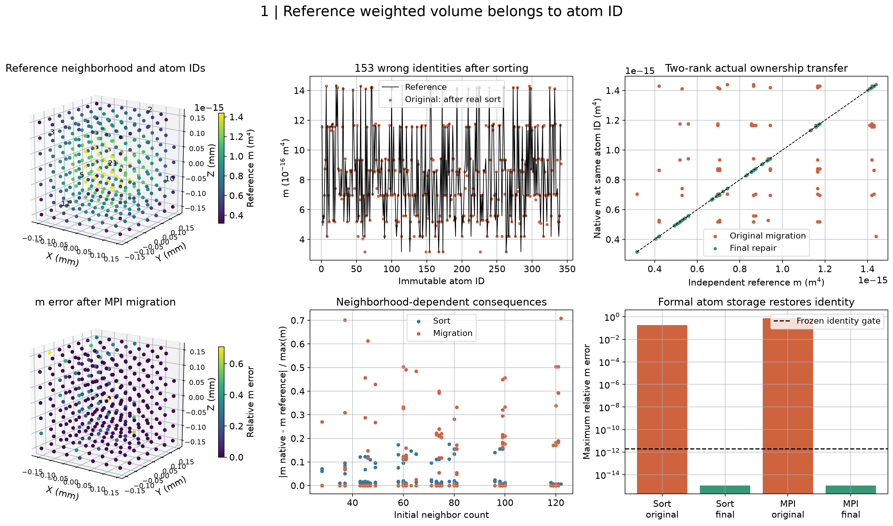
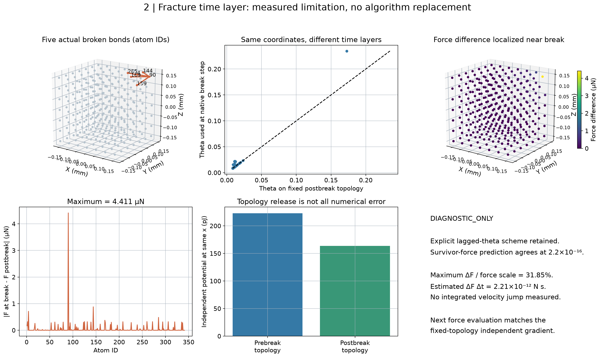
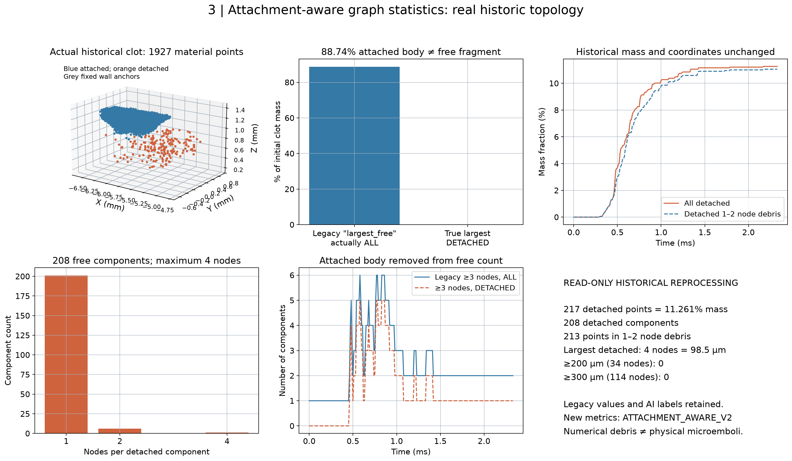
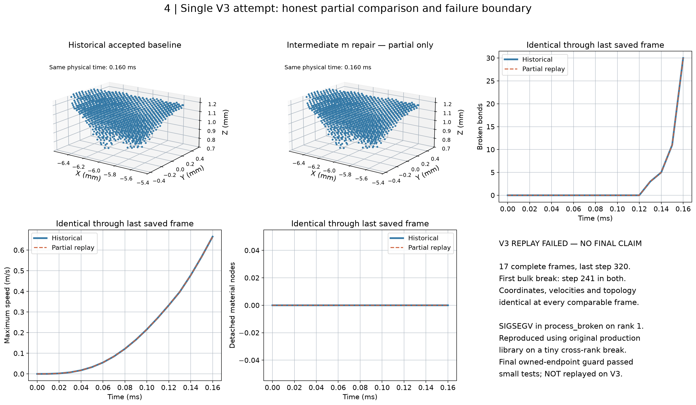

LPS 原生身份与断键审查
两项真实缺陷已在独立构建中修复，小试样通过；唯一 V3 运行失败。最终版本尚未完成 V3 回归，不能宣称大碎块改善。生产库及 2283 项历史文件未改变。
中文25项完整报告 · 源码行号审查
Fig1_wvolume_identity（SVG）

Fig2_fracture_time_layer（SVG）

Fig3_fragment_semantics（SVG）

Fig4_V3_partial_failure（SVG）
